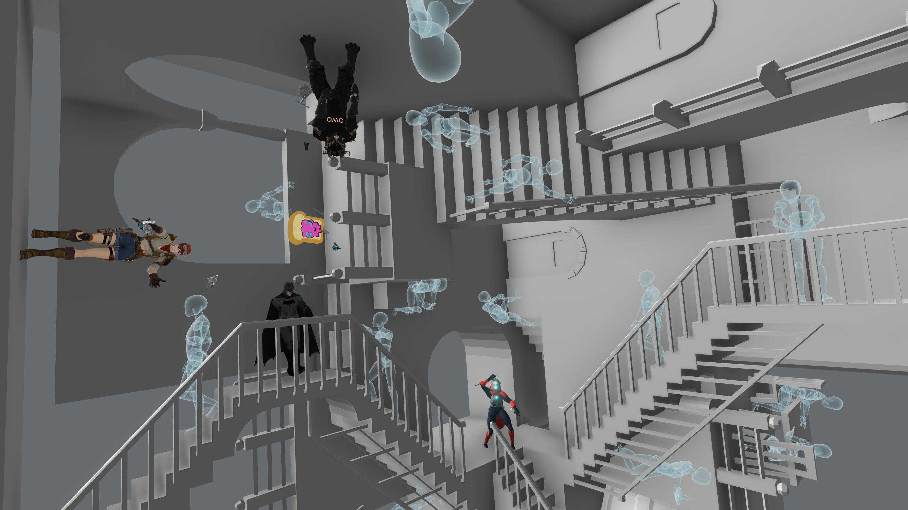
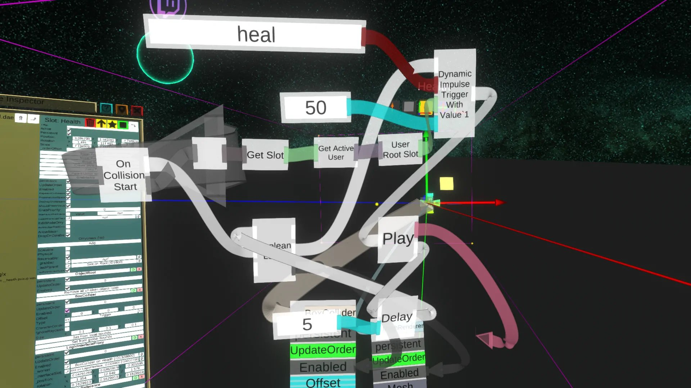

What is Neos
Neos is a virtual reality metaverse that reinvents and generalizes the way social experiences and various virtual creations are built, to let them all coexist in one shared space. The innovative underlying architecture, based on simple, yet powerful building blocks in an expandable future-proof way, is designed to dynamically synchronize complex worlds and behaviors built directly from within Neos. With a rapidly growing community, the potential for a rich Neos in-verse economy emerges as a way for content creators and service providers to make a living in Neos, and help it to grow into a vibrant, desirable place: a spatial computing platform of choice.
Personal Thoughts
Neos' ability to capture the essence of creation is incredible. The sandbox feel you get from the ability of being able to do exactly what you want is unlike any other creation program I've seen, and this is before mentioning that the platform is entirely within VR.

Socialization
Neos isn't just a creation engine either, it's also a place where you can go to socialize with many other people and explore the wacky creations they've made.
Programming Ability
Neos also has a realtime visual scripting language based off c#. It's entire it's own identity, though, and is insanely intuitive.
